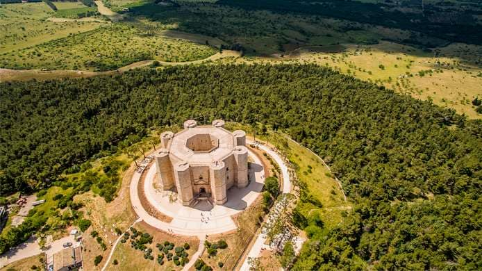
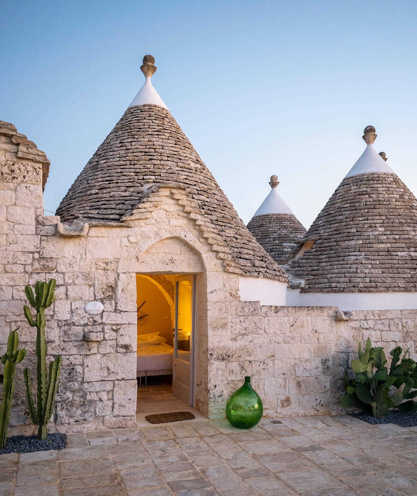
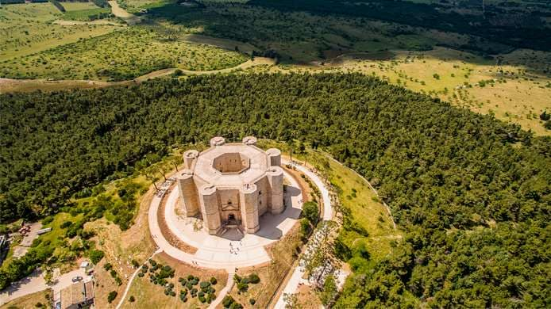
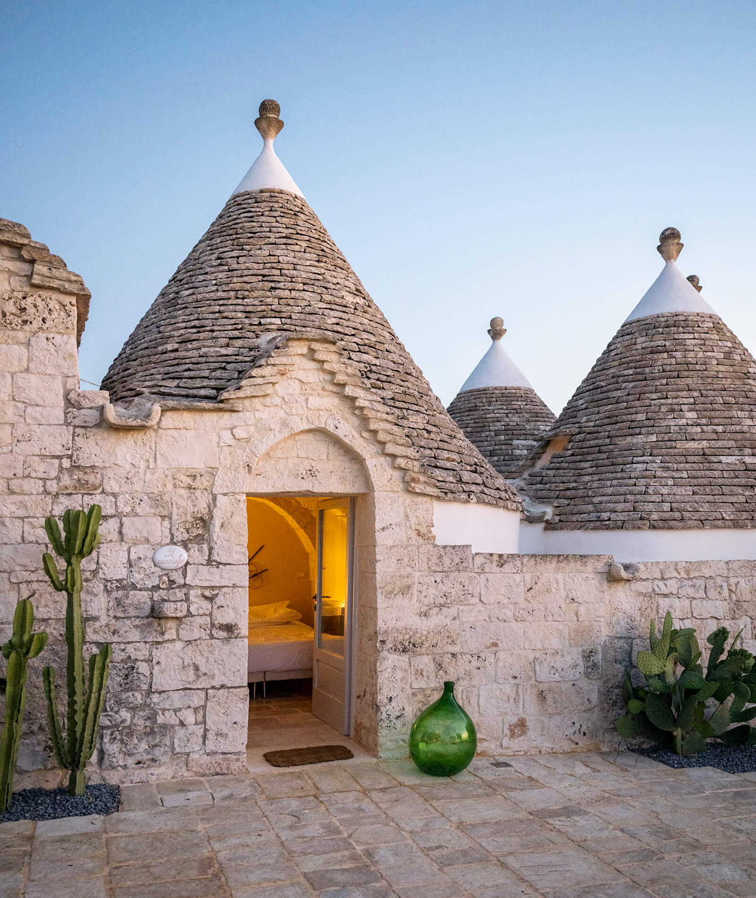

L’Italia possiede il più grande patrimonio artistico e culturale di tutto il mondo,
lasciato in dono
dal sovrapporsi di popoli e culture nei secoli, costituito da più di 3400 musei, 2100 parchi
archeologici e 43 siti Unesco. Tuttavia si ha spesso
l’impressione che si dia poca importanza e non si valorizzi adeguatamente il patrimonio artistico e
culturale italiano, al contrario dei sensi dell’articolo 9 della Costituzione
Italiana che cita “La Repubblica promuove lo sviluppo della cultura e la ricerca scientifica e
tecnica.
Tutela il paesaggio e il patrimonio storico e artistico della Nazione.”
Il nostro patrimonio è infatti così grande che viene, generalmente, da noi sottovalutato:
al contrario di quanto avviene in altri paesi, ovvero valorizzare le poche ricchezze che si
hanno nella maniera migliore, in Italia, forse perché consapevoli di avere un patrimonio artistico e
culturale unico al mondo, raramente ci impegniamo a valorizzarlo come meriterebbe.
Molto spesso infatti mancano cure
adeguate, come operazioni di restauro o un controllo più efficace e attento. Questo approccio
superficiale alla promozione del nostro patrimonio è dovuto a vari fattori, quali l’ampia
distribuzione su tutto il Paese delle dei beni, che comporta complicanze come la dispersione,
che rende difficile il coordinamento degli interventi, o anche l’impossibilità di stabilire la
priorità di un monumento o un’opera rispetto ad un altro, che causa uno stato di semiabbandono
di molti palazzi, chiese, o addirittura interi centri storici, che cadono a pezzi. Ma il
problema più grande è che nonostante il possedimento di questa grande ricchezza, in Italia non
si riscontra un ritorno economico adeguato. A causa delle considerevoli spese necessarie alla
salvaguardia, recupero e restauro, le opere d’arte sembrano essere più un peso finanziario che
una fonte di guadagno. Dovrebbero invece essere attuate delle adeguate strategie di sviluppo, in
modo da sfruttare queste enormi ricchezze e tramutarle in vantaggi economici.

 


